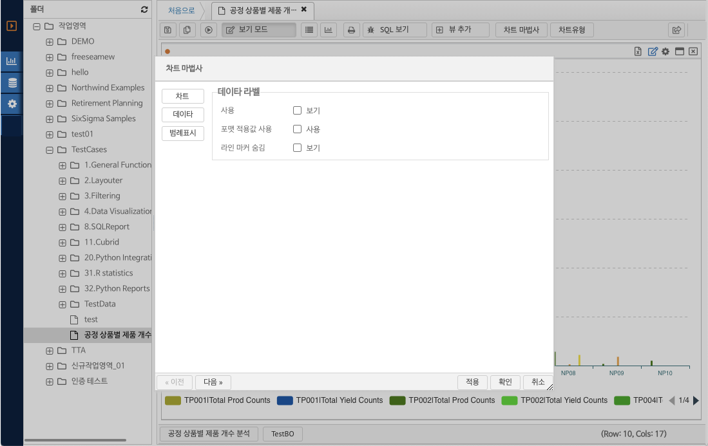

7.5. 차트 보기
데이터 차트로 보기
피벗 조회된 결과는 차트 보기 클릭 시 자동으로 차트 유형으로 변경되며 리포트 레이아웃의 변경 사항 및 차트의 구성 요소는 아래와 같다.
(그림 : 결과 시트 위젯 차트 보기 모드)
리포트 툴바의 차트 보기 버튼을 클릭 하면 그리드 결과값이 차트로 변경된다. 리포트를 편집 모드인 경우 툴바에 차트 옵션 설정을 위한 추가 설정 버튼이 나타난다. 추가되는 설정 버튼은 다음과 같다.
-. 차트 마법사 : 차트 설정 마법사 화면을 연다.
-. 차트 유형 : 팝업 메뉴에서 주요 차트로 바로 결과를 변경하는 기능을 제공한다.
차트 데이터 표현 보기
피벗 설정에서 구성한 행 영역 디멘젼, 메져 영역 디멘젼, 열 영역 디멘젼 항목이 차트의 X축, 데이터 값 영역, 차트 시리즈에 맵핑되어 나타난다. 각 피벗 옵션 및 이에 맵핑되는 구조는 다음과 같다.
-. 차트 X축 : 피벗의 행 영역 디멘젼의 결과값의 조합된 내용이 표현된다.
-. 차트 Y축 및 바의 크기 : 피벗의 메져 영역 데이터 값으로 크기가 표현된다.
-. 차트 시리즈 : 피벗의 열 영역 디멘젼 및 복수개의 메져가 있는 경우 조합한 내용의 결과가 차트의 범례 영역에 표현된다.
차트 마법사
차트 마법사의 화면 레이아웃 구성은 다음과 같다.

(그림 : 차트 마법사 화면 레이아웃 구성)
마법사 설정 단계 바로 가기 : 차트의 옵션을 그룹화 하여 해당하는 내용을 수정하기 위한 단계로 바로 가기 위한 단축 아이콘의 역할 을 한다.
차트 옵션 설정 영역 : 마법사를 통한 설정 옵션이 표시되는 영역이다.
마법사 단계 진행 버튼 : 옵션의 다음 단계 혹은 이전 단계로 전환하기 위해 사용한다.
마법사 설정 내용 반영 컨트롤 버튼 :
-. 적용 : 현재 변경사항을 차트에 반영하고 계속 수정하고자 하는 경우 (팝업 마법사를 닫지 않는다.)
-. 확인 : 현재 변경사항을 차트에 반영하고 마법사 화면을 닫는다.
-. 취소 : 현재 변경사항을 취소하고 마법사 화면을 닫는다.
차트의 종류
* 일반차트
-. 컬럼 차트
-. 라인 차트
-. 스플라인 차트
-. 에어리어 차트
-. 스플라인 에어리어 차트
-. 바차트
* 파이 및 데시보드 위젯
-. 파이차트
-. 도넛차트
* 스캐터 및 포인터 차트
-. 버블차트
-. 스캐터 차트
(그림 : 차트 마법사, 차트 선택)
차트 마법사 - 데이터 설정

(그림 : 차트 마법사, 데이터 설정)
데이터 라벨 : 차트의 바에 수치값을 보여주는 옵션을 제공한다.
-. 사용 : 데이터 라벨을 보여 준다.
-. 포맷 적용값 사용 : 숫자의 천 단위 구분자등이 적용된 그리드와 동일한 값으로 표시할 지의 여부를 지정한다.
-. 라인 마커 숨김 : 라인, 스플라인, 에어리어, 에어리어 스플라인의 라인에 특정 마커를 표시할지의 여부를 지정한다.
차트 마법사 - 범례 표시
(그림 : 차트 마법사, 범례 표시)
보기 옵션 :
범례 보이기 : 범례를 숨김 처리 하기 위해서는 체크버튼 선택을 해제한다.
제목 설정 : 차트의 헤더에 제목을 삽입하는 기능을 제공한다.
보기 : 제목을 보임 / 숨김 할지의 여부를 지정한다.
타이틀 : 제목의 텍스트 내용을 입력 한다.